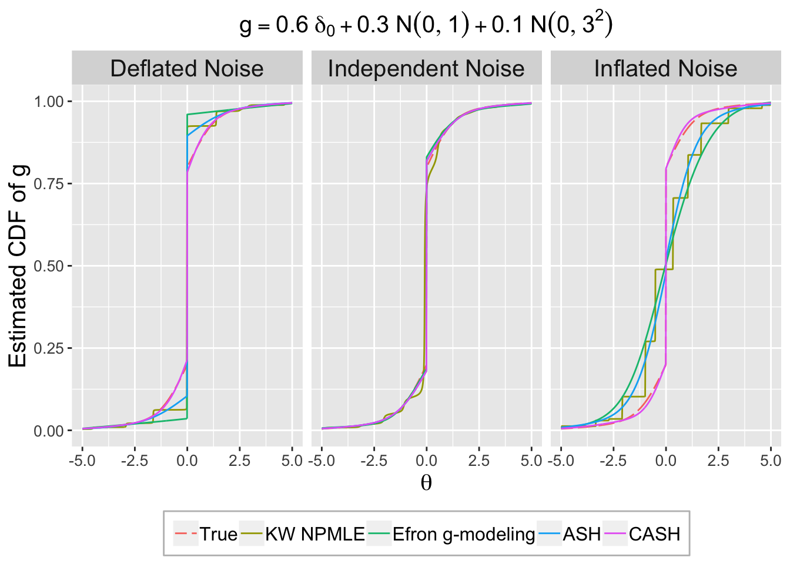

Last updated: 2018-06-10
workflowr checks: (Click a bullet for more information) ✔ R Markdown file: up-to-date
Great! Since the R Markdown file has been committed to the Git repository, you know the exact version of the code that produced these results.
✔ Environment: empty
Great job! The global environment was empty. Objects defined in the global environment can affect the analysis in your R Markdown file in unknown ways. For reproduciblity it’s best to always run the code in an empty environment.
✔ Seed:
set.seed(12345)
The command set.seed(12345) was run prior to running the code in the R Markdown file. Setting a seed ensures that any results that rely on randomness, e.g. subsampling or permutations, are reproducible.
✔ Session information: recorded
Great job! Recording the operating system, R version, and package versions is critical for reproducibility.
✔ Repository version: 386b1fd
wflow_publish or wflow_git_commit). workflowr only checks the R Markdown file, but you know if there are other scripts or data files that it depends on. Below is the status of the Git repository when the results were generated:
Ignored files:
Ignored: .DS_Store
Ignored: .Rhistory
Ignored: .Rproj.user/
Ignored: analysis/.DS_Store
Ignored: analysis/BH_robustness_cache/
Ignored: analysis/FDR_Null_cache/
Ignored: analysis/FDR_null_betahat_cache/
Ignored: analysis/Rmosek_cache/
Ignored: analysis/StepDown_cache/
Ignored: analysis/alternative2_cache/
Ignored: analysis/alternative_cache/
Ignored: analysis/ash_gd_cache/
Ignored: analysis/average_cor_gtex_2_cache/
Ignored: analysis/average_cor_gtex_cache/
Ignored: analysis/brca_cache/
Ignored: analysis/cash_deconv_cache/
Ignored: analysis/cash_fdr_1_cache/
Ignored: analysis/cash_fdr_2_cache/
Ignored: analysis/cash_fdr_3_cache/
Ignored: analysis/cash_fdr_4_cache/
Ignored: analysis/cash_fdr_5_cache/
Ignored: analysis/cash_fdr_6_cache/
Ignored: analysis/cash_plots_2_cache/
Ignored: analysis/cash_plots_cache/
Ignored: analysis/cash_sim_1_cache/
Ignored: analysis/cash_sim_2_cache/
Ignored: analysis/cash_sim_3_cache/
Ignored: analysis/cash_sim_4_cache/
Ignored: analysis/cash_sim_5_cache/
Ignored: analysis/cash_sim_6_cache/
Ignored: analysis/cash_sim_7_cache/
Ignored: analysis/correlated_z_2_cache/
Ignored: analysis/correlated_z_3_cache/
Ignored: analysis/correlated_z_cache/
Ignored: analysis/create_null_cache/
Ignored: analysis/cutoff_null_cache/
Ignored: analysis/design_matrix_2_cache/
Ignored: analysis/design_matrix_cache/
Ignored: analysis/diagnostic_ash_cache/
Ignored: analysis/diagnostic_correlated_z_2_cache/
Ignored: analysis/diagnostic_correlated_z_3_cache/
Ignored: analysis/diagnostic_correlated_z_cache/
Ignored: analysis/diagnostic_plot_2_cache/
Ignored: analysis/diagnostic_plot_cache/
Ignored: analysis/efron_leukemia_cache/
Ignored: analysis/figure/
Ignored: analysis/fitting_normal_cache/
Ignored: analysis/gaussian_derivatives_2_cache/
Ignored: analysis/gaussian_derivatives_3_cache/
Ignored: analysis/gaussian_derivatives_4_cache/
Ignored: analysis/gaussian_derivatives_5_cache/
Ignored: analysis/gaussian_derivatives_cache/
Ignored: analysis/gd-ash_cache/
Ignored: analysis/gd_delta_cache/
Ignored: analysis/gd_lik_2_cache/
Ignored: analysis/gd_lik_cache/
Ignored: analysis/gd_w_cache/
Ignored: analysis/knockoff_10_cache/
Ignored: analysis/knockoff_2_cache/
Ignored: analysis/knockoff_3_cache/
Ignored: analysis/knockoff_4_cache/
Ignored: analysis/knockoff_5_cache/
Ignored: analysis/knockoff_6_cache/
Ignored: analysis/knockoff_7_cache/
Ignored: analysis/knockoff_8_cache/
Ignored: analysis/knockoff_9_cache/
Ignored: analysis/knockoff_cache/
Ignored: analysis/knockoff_var_cache/
Ignored: analysis/marginal_z_alternative_cache/
Ignored: analysis/marginal_z_cache/
Ignored: analysis/mosek_reg_2_cache/
Ignored: analysis/mosek_reg_4_cache/
Ignored: analysis/mosek_reg_5_cache/
Ignored: analysis/mosek_reg_6_cache/
Ignored: analysis/mosek_reg_cache/
Ignored: analysis/pihat0_null_cache/
Ignored: analysis/plot_diagnostic_cache/
Ignored: analysis/poster_obayes17_cache/
Ignored: analysis/real_data_simulation_2_cache/
Ignored: analysis/real_data_simulation_3_cache/
Ignored: analysis/real_data_simulation_4_cache/
Ignored: analysis/real_data_simulation_5_cache/
Ignored: analysis/real_data_simulation_cache/
Ignored: analysis/rmosek_primal_dual_2_cache/
Ignored: analysis/rmosek_primal_dual_cache/
Ignored: analysis/seqgendiff_cache/
Ignored: analysis/simulated_correlated_null_2_cache/
Ignored: analysis/simulated_correlated_null_3_cache/
Ignored: analysis/simulated_correlated_null_cache/
Ignored: analysis/simulation_real_se_2_cache/
Ignored: analysis/simulation_real_se_cache/
Ignored: analysis/smemo_2_cache/
Ignored: data/LSI/
Ignored: docs/.DS_Store
Ignored: docs/figure/.DS_Store
Ignored: output/fig/
| File | Version | Author | Date | Message |
|---|---|---|---|---|
| rmd | 386b1fd | LSun | 2018-06-10 | wflow_publish(“analysis/gd_w.rmd”) |
| rmd | d8add67 | Lei Sun | 2018-06-10 | selected examples |
| html | ff560a1 | LSun | 2018-06-10 | Build site. |
| rmd | dc80048 | Lei Sun | 2018-06-09 | gene random |
| rmd | ee5f1d8 | LSun | 2018-06-09 | GD |
| html | b0f5a28 | LSun | 2018-06-03 | Build site. |
| rmd | 7f9e4ff | LSun | 2018-06-03 | wflow_publish(“analysis/gd_w.rmd”) |
| html | 792751b | LSun | 2018-06-02 | Build site. |
| rmd | b7bf225 | Lei Sun | 2018-06-02 | ecdf.avg |
| html | cf1e8e9 | LSun | 2018-06-01 | Build site. |
| rmd | 08b81b6 | LSun | 2018-06-01 | wflow_publish(“analysis/gd_w.rmd”) |
| html | b4bd5d8 | LSun | 2018-05-30 | Build site. |
| rmd | edfa8ce | Lei Sun | 2018-05-30 | new KM |
| html | 086abd6 | LSun | 2018-05-30 | Build site. |
| rmd | e9c3b2d | LSun | 2018-05-30 | wflow_publish(“analysis/gd_w.rmd”) |
| html | 99004e9 | LSun | 2018-05-30 | Build site. |
| rmd | d54a155 | Lei Sun | 2018-05-30 | eps |
| html | 2acb1ab | LSun | 2018-05-29 | Build site. |
| rmd | fc26405 | Lei Sun | 2018-05-29 | revision |
| html | b42a125 | LSun | 2018-05-29 | Build site. |
| rmd | c1f43e0 | LSun | 2018-05-29 | wflow_publish(“analysis/gd_w.rmd”) |
| rmd | 1ca47ca | Lei Sun | 2018-05-29 | revise |
| rmd | 119caf9 | LSun | 2018-05-29 | deconv |
| rmd | 2716923 | Lei Sun | 2018-05-29 | deconv |
| html | 9914885 | LSun | 2018-05-27 | Build site. |
| rmd | e68958a | Lei Sun | 2018-05-27 | fit |
| html | fd44b58 | LSun | 2018-05-26 | Build site. |
| rmd | 572e589 | Lei Sun | 2018-05-26 | plots |
| rmd | bb57226 | Lei Sun | 2018-05-26 | plots |
| rmd | 854ec31 | Lei Sun | 2018-05-26 | plots |
| rmd | 9b26932 | Lei Sun | 2018-05-26 | plots |
| rmd | 086a2bf | Lei Sun | 2018-05-26 | output |
| rmd | 14d847a | Lei Sun | 2018-05-26 | histograms of z |
| html | 7b21d1f | LSun | 2018-05-25 | Build site. |
| rmd | 535ecdd | LSun | 2018-05-25 | wflow_publish(“analysis/gd_w.rmd”) |
| html | 4d653b1 | LSun | 2018-05-15 | Build site. |
| html | e05bc83 | LSun | 2018-05-12 | Update to 1.0 |
| rmd | cc0ab83 | Lei Sun | 2018-05-11 | update |
| html | 807f924 | LSun | 2018-05-11 | Build site. |
| rmd | 548070e | LSun | 2018-05-11 | wflow_publish(“analysis/gd_w.rmd”) |
| html | 84c7d5b | LSun | 2018-05-11 | Build site. |
| rmd | 5c9aeac | LSun | 2018-05-11 | wflow_publish(“analysis/gd_w.rmd”) |
| html | ed9c0d9 | LSun | 2018-05-11 | Build site. |
| rmd | 0ea9f77 | Lei Sun | 2018-05-10 | W |
| html | adeab80 | LSun | 2018-05-06 | Build site. |
| rmd | 0b0a394 | LSun | 2018-05-06 | wflow_publish(c(“analysis/BH_robustness.rmd”, “analysis/gd_w.rmd”)) |
| html | 720d179 | LSun | 2018-04-18 | Build site. |
| rmd | b82e2bc | LSun | 2018-04-18 | wflow_publish(c(“analysis/gd_w.rmd”, “analysis/index.Rmd”)) |
| rmd | c7c5984 | Lei Sun | 2018-04-15 | ecdfz |
| html | 1c2f32e | LSun | 2018-04-15 | Build site. |
| rmd | 3b5dcc4 | LSun | 2018-04-15 | wflow_publish(“analysis/gd_w.rmd”) |
| rmd | 1b5d40f | Lei Sun | 2018-04-13 | gd w |
| rmd | c766b80 | LSun | 2018-04-13 | add lfsr |
source("../code/gdash_lik.R")Warning: package 'Matrix' was built under R version 3.4.4source("../code/gdfit.R")
source("../code/count_to_summary.R")
library(limma)
library(edgeR)
library(ashr)
library(plyr)
library(ggplot2)
library(reshape2)
library(decon)
library(deconvolveR)set.seed(777)
d <- 10
n <- 1e4
B <- matrix(rnorm(n * d), n, d)
Sigma <- B %*% t(B) + diag(n)
sigma <- diag(Sigma)
Rho <- cov2cor(Sigma)
rhobar <- c()
for (l in 1 : 10) {
rhobar[l] <- (sum(Rho^l) - n) / (n * (n - 1))
}par(mar = c(5.1, 4.1, 1, 2.1))
hist(Rho[lower.tri(Rho)], xlab = expression(rho[ij]), main = "")| Version | Author | Date |
|---|---|---|
| 720d179 | LSun | 2018-04-18 |
set.seed(20)
z <- rnorm(d)
Z <- B %*% z + rnorm(n)
Z <- Z / sqrt(sigma)
cat("sd(Z) =", sd(Z))sd(Z) = 1.262205hist(Z, breaks = 20, prob = TRUE, ylim = c(0, dnorm(0)))
lines(seq(-5, 5, by = 0.1), dnorm(seq(-5, 5, by = 0.1)), col = "blue")| Version | Author | Date |
|---|---|---|
| 720d179 | LSun | 2018-04-18 |
p <- pnorm(-abs(Z)) * 2
par(mfcol = c(2, 2))
par(mar = c(5.1, 4.1, 3, 2.1))
hist(p, breaks = 100, main = "Correlated", xlab = "p-value")
par(mar = c(5.1, 4.1, 1, 2.1))
plot(-log(p), ylim = range(-log(p), -log(pnorm(-sqrt(2 * log(n))) * 2), -log(0.05 / n)))
abline(h = -log(pnorm(-sqrt(2 * log(n))) * 2), col = "maroon")
abline(h = -log(0.05 / n), col = "red")
abline(h = -log(0.001), col = "green")
abline(h = -log(0.05), col = "blue")
Z <- rnorm(n)
p <- pnorm(-abs(Z)) * 2
par(mar = c(5.1, 4.1, 3, 2.1))
hist(p, breaks = 100, main = "Independent", xlab = "p-value")
par(mar = c(5.1, 4.1, 1, 2.1))
plot(-log(p), ylim = range(-log(p), -log(pnorm(-sqrt(2 * log(n))) * 2), -log(0.05 / n)))
abline(h = -log(pnorm(-sqrt(2 * log(n))) * 2), col = "maroon")
abline(h = -log(0.05 / n), col = "red")
abline(h = -log(0.001), col = "green")
abline(h = -log(0.05), col = "blue")| Version | Author | Date |
|---|---|---|
| 720d179 | LSun | 2018-04-18 |
set.seed(777)
nsim <- 1e4
Z.list <- W <- list()
for (i in 1 : nsim) {
z <- rnorm(d)
Z <- B %*% z + rnorm(n)
Z <- Z / sqrt(sigma)
Z.list[[i]] <- Z
Z.GD <- gdfit.mom(Z, 100)
W[[i]] <- Z.GD$w
}
Z.sim <- Z.list
W.sim <- Wr <- readRDS("../data/liver.rds")top_genes_index = function (g, X) {
return(order(rowSums(X), decreasing = TRUE)[1 : g])
}
lcpm = function (r) {
R = colSums(r)
t(log2(((t(r) + 0.5) / (R + 1)) * 10^6))
}nsamp <- 5
ngene <- 1e4Y = lcpm(r)
subset = top_genes_index(ngene, Y)
r = r[subset,]set.seed(7)
nsim <- 1e4
Z.list <- W <- list()
for (i in 1 : nsim) {
## generate data
counts <- r[, sample(ncol(r), 2 * nsamp)]
design <- model.matrix(~c(rep(0, nsamp), rep(1, nsamp)))
summary <- count_to_summary(counts, design)
Z <- summary$z
Z.list[[i]] <- Z
Z.GD <- gdfit.mom(Z, 100)
W[[i]] <- Z.GD$w
}
Z.gtex <- Z.list
W.gtex <- Wquantile.vec1 <- exp(seq(-21, -5, by = 0.01))
quantile.vec2 <- seq(0.007, 0.993, by = 0.001)
quantile.vec3 <- exp(seq(-5, -21, by = -0.01))
emp.cdf.Z1 <- sapply(quantile.vec1, function(x) {sapply(Z.gtex, function(y) mean(y <= qnorm(x)))})
emp.cdf.Z2 <- sapply(quantile.vec2, function(x) {sapply(Z.gtex, function(y) mean(y <= qnorm(x)))})
emp.cdf.Z3 <- sapply(quantile.vec3, function(x) {sapply(Z.gtex, function(y) mean(y <= -qnorm(x)))})
emp.cdf.Z4 <- sapply(quantile.vec3, function(x) {sapply(Z.gtex, function(y) mean(y > -qnorm(x)))})ecdf.avg1 <- colMeans(emp.cdf.Z1)
ecdf.avg2 <- colMeans(emp.cdf.Z2)
ecdf.avg3 <- colMeans(emp.cdf.Z3)
ecdf.avg4 <- colMeans(emp.cdf.Z4)
ecdf.avg <- c(ecdf.avg1, ecdf.avg2, ecdf.avg3)
ecdf.tail.avg.conf.int1 <- apply(emp.cdf.Z1, 2, function(x) {t.test(x)$conf.int})
ecdf.tail.avg.conf.int4 <- apply(emp.cdf.Z4, 2, function(x) {t.test(x)$conf.int})pdf("../output/fig/cor_z_avg_cdf.pdf", height = 4, width = 4)
par(mar = c(4.5, 4.5, 1, 1))
plot(c(qnorm(quantile.vec1), qnorm(quantile.vec2), -qnorm(quantile.vec3)), ecdf.avg, type = "l", xlab = "z", ylab = "CDF")
lines(c(qnorm(quantile.vec1), qnorm(quantile.vec2), -qnorm(quantile.vec3)), c(quantile.vec1, quantile.vec2, pnorm(-qnorm(quantile.vec3))), lty = 2, col = "blue")
legend("bottomright", lty = c(1, 2), col = c(1, "blue"), legend = c(expression(bar("F"[n])(z)), expression(Phi(z))))
rect(xleft = c(range(qnorm(quantile.vec1))[1], range(-qnorm(quantile.vec3))[1]),
xright = c(range(qnorm(quantile.vec1))[2], range(-qnorm(quantile.vec3))[2]),
ybottom = c(range(quantile.vec1, ecdf.avg1)[1], range(1 - quantile.vec3, 1 - ecdf.avg4)[1]),
ytop = c(range(quantile.vec1, ecdf.avg1)[2], range(1 - quantile.vec3, 1 - ecdf.avg4)[2]),
border = "red", lty = c(1, 5)
)
dev.off()quartz_off_screen
2 pdf("../output/fig/cor_z_avg_cdf_left.pdf", height = 4, width = 4)
par(mar = c(4.5, 4.5, 1, 1))
plot(qnorm(quantile.vec1), log(ecdf.avg1), type = "l",
ylim = range(log(quantile.vec1), log(ecdf.avg1)),
xlab = "z", ylab = "log (CDF)", bty = "n")
lines(qnorm(quantile.vec1), log(quantile.vec1), lty = 2, col = "blue")
lines(qnorm(quantile.vec1), log(pnorm(qnorm(quantile.vec1), 0, 1.1)), lty = 2, col = "orange")
lines(qnorm(quantile.vec1), log(pnorm(qnorm(quantile.vec1), 0, 1.05)), lty = 2, col = "green")
polygon(x = c(qnorm(quantile.vec1), rev(qnorm(quantile.vec1))),
y = c(log(ecdf.tail.avg.conf.int1[1, ]), rev(log(ecdf.tail.avg.conf.int1[2, ]))),
border = NA,
col = grDevices::adjustcolor("grey75", alpha.f = 0.5))Warning in log(ecdf.tail.avg.conf.int1[1, ]): NaNs producedlegend("bottomright", lty = c(1, 2, 2, 2), col = c("black", "blue", "green", "orange"), legend = c(
expression(bar("F"[n])),
expression(N(0, 1)),
expression(N(0, 1.05^2)),
expression(N(0, 1.1^2))
))
box(col = "red")
dev.off()quartz_off_screen
2 pdf("../output/fig/cor_z_avg_cdf_right.pdf", height = 4, width = 4)
par(mar = c(4.5, 4.5, 1, 1))
plot(-qnorm(quantile.vec3), log(ecdf.avg4), type = "l",
ylim = range(log(quantile.vec3), log(ecdf.avg4)),
xlab = "z", ylab = "log (1 - CDF)", bty = "n")
lines(-qnorm(quantile.vec3), log(quantile.vec3), lty = 2, col = "blue")
lines(-qnorm(quantile.vec3), log(pnorm(qnorm(quantile.vec3), 0, 1.1)), lty = 2, col = "orange")
lines(-qnorm(quantile.vec3), log(pnorm(qnorm(quantile.vec3), 0, 1.05)), lty = 2, col = "green")
polygon(x = c(-qnorm(quantile.vec3), rev(-qnorm(quantile.vec3))),
y = c(log(ecdf.tail.avg.conf.int4[1, ]), rev(log(ecdf.tail.avg.conf.int4[2, ]))),
border = NA,
col = grDevices::adjustcolor("grey75", alpha.f = 0.5))
legend("bottomleft", lty = c(1, 2, 2, 2), col = c("black", "blue", "green", "orange"), legend = c(
expression(bar("F"[n])),
expression(N(0, 1)),
expression(N(0, 1.05^2)),
expression(N(0, 1.1^2))
))
box(col = "red", lty = 5)
dev.off()quartz_off_screen
2 set.seed(777)
nsamp <- 50
nsim <- 1e3
z <- sebetahat <- list()
for (i in 1 : nsim) {
## generate data
counts <- r[, sample(ncol(r), 2 * nsamp)]
design <- model.matrix(~c(rep(0, nsamp), rep(1, nsamp)))
summary <- count_to_summary(counts, design)
z[[i]] <- summary$z
sebetahat[[i]] <- summary$sebetahat
}sd.vec <- sapply(z, sd)
median.vec <- sapply(z, median)
fd.vec <- sapply(z, function(x) {
p <- pnorm(-abs(x)) * 2
sum(p <= 0.005)
})
sel <- c(834, 211, 397, 748)
par(mfrow = c(2, 2))
for (i in seq(sel)) {
fit <- gdfit(z[[sel[i]]], 10)
plot.gdfit(z[[sel[i]]], fit$w, fit$L, legend = FALSE)
}| Version | Author | Date |
|---|---|---|
| adeab80 | LSun | 2018-05-06 |
set.seed(6)
par(mfrow = c(2, 3))
par(mar = c(4.5, 4.5, 2, 2))
hist(pnorm(-abs(z[[834]])) * 2, prob = TRUE, xlab = "", breaks = 100, main = "(a): Histogram of two-sided p-values")
lines(c(0, 1), c(1, 1), col = "red")
hist(z[[834]], prob = TRUE, breaks = 100, xlab = "", xlim = c(-4.5, -2), main = "(b): Left tail of correlated z-scores")
lines(seq(-6, 6, by = 0.01), dnorm(seq(-6, 6, by = 0.01), 0, sd(z[[834]])), col = "blue")
lines(seq(-6, 6, by = 0.01), dnorm(seq(-6, 6, by = 0.01)), col = "red")
hist(z[[834]], prob = TRUE, breaks = 100, xlab = "", xlim = c(2, 4.5), main = "(c): Right tail of correlated z-scores")
lines(seq(-6, 6, by = 0.01), dnorm(seq(-6, 6, by = 0.01)), col = "red")
p <- pnorm(-abs(z[[834]])) * 2
plot(sample(-log(pnorm(-abs(z[[834]])) * 2)), ylim = c(0, 20), ylab = "-log(p)", main = expression(paste("(d): Correlated ", N(0, 1))))
abline(h = -log(0.005), col = "red")
abline(h = -log(pnorm(-sqrt(2 * log(1e4))) * 2), col = "blue")
abline(h = -log(0.05 / 1e4), col = "green")
plot(-log(pnorm(-abs(rnorm(1e4))) * 2), ylim = c(0, 20), ylab = "-log(p)", main = expression(paste("(e): Independent ", N(0, 1))))
abline(h = -log(0.005), col = "red")
abline(h = -log(pnorm(-sqrt(2 * log(1e4))) * 2), col = "blue")
abline(h = -log(0.05 / 1e4), col = "green")
plot(-log(pnorm(-abs(rnorm(1e4, 0, 1.6))) * 2), ylim = c(0, 20), ylab = "-log(p)", main = expression(paste("(f): Independent ", N(0, 1.6^2))))
abline(h = -log(0.005), col = "red")
abline(h = -log(pnorm(-sqrt(2 * log(1e4))) * 2), col = "blue")
abline(h = -log(0.05 / 1e4), col = "green")| Version | Author | Date |
|---|---|---|
| adeab80 | LSun | 2018-05-06 |
p.bh <- p.adjust(p, method = "BH")
sum(p.bh <= 0.05)[1] 575plot(sort(log(p)), cex = 0.25, pch = 19, ylim = c(-19, 0), xlab = "Order", ylab = "log(p)")
set.seed(6)
z.indep <- rnorm(1e4)
points(sort(log(pnorm(-abs(z.indep)) * 2)), cex = 0.25, pch = 19, col = "blue")
z.indep <- rnorm(1e4, 0, 1.6)
points(sort(log(pnorm(-abs(z.indep)) * 2)), cex = 0.25, pch = 19, col = "green")
plot(sort(log(p)), cex = 0.25, pch = 19, ylim = c(-19, -2.5), xlim = c(1, 850), xlab = "Order", ylab = "log(p)")
set.seed(6)
z.indep <- rnorm(1e4)
points(sort(log(pnorm(-abs(z.indep)) * 2)), cex = 0.25, pch = 19, col = "blue")
z.indep <- rnorm(1e4, 0, 1.6)
points(sort(log(pnorm(-abs(z.indep)) * 2)), cex = 0.25, pch = 19, col = "green")
abline(h = log(0.005), col = "red", lty = 2)
abline(h = log(pnorm(-sqrt(2 * log(1e4))) * 2), col = "red", lty = 2)
abline(h = log(0.05 / 1e4), col = "red", lty = 2)| Version | Author | Date |
|---|---|---|
| adeab80 | LSun | 2018-05-06 |
W.sim.gd <- sapply(Z.sim, function (z) {fit.z <- gdfit(z, L = 10); return(
list(w = fit.z$w, status = fit.z$status))})W.gtex.gd <- sapply(Z.gtex, function (z) {fit.z <- gdfit(z, L = 10); return(
list(w = fit.z$w, status = fit.z$status))})z <- z.mat.sel[3, ]
p <- pnorm(-abs(z)) * 2
## the image is 7.5 * 3
setEPS()
postscript("../output/fig/cor_z_cdf.eps", width = 7.5, height = 3)
par(mfrow = c(1, 3))
par(oma = c(4, 2.5, 0, 0)) # make room (i.e. the 4's) for the overall x and y axis titles
par(mar = c(2, 2, 2.5, 1)) # make the plots be closer together
plot(ecdf(z), xlab = "", ylab = "", lwd = 2, main = expression("(a): CDF of All"), cex.main = 1.5)
lines(seq(-6, 6, by = 0.01), pnorm(seq(-6, 6, by = 0.01)), col = "blue", lwd = 2)
lines(seq(-6, 6, by = 0.01), pnorm(seq(-6, 6, by = 0.01), 0, 1.6), col = "green", lwd = 2)
rect(xleft = c(-5, 2.5),
xright = c(-2.5, 5),
ytop = c(0.05, 1),
ybottom = c(0, 0.95), border = "red", lty = c(1, 5))
plot(ecdf(z), xlab = "", ylab = "", main = expression("(b): Left Tail"), lwd = 2, xlim = c(-5, -2.5), ylim = c(0, 0.05), cex.main = 1.5, bty = "n")
box(col = "red")
lines(seq(-6, 6, by = 0.01), pnorm(seq(-6, 6, by = 0.01)), col = "blue", lwd = 2)
lines(seq(-6, 6, by = 0.01), pnorm(seq(-6, 6, by = 0.01), 0, 1.6), col = "green", lwd = 2)
plot(ecdf(z), xlab = "", ylab = "", main = expression("(c): Right tail"), lwd = 2, xlim = c(2.5, 5), ylim = c(0.95, 1), cex.main = 1.5, bty = "n")
box(col = "red", lty = 5)
lines(seq(-6, 6, by = 0.01), pnorm(seq(-6, 6, by = 0.01)), col = "blue", lwd = 2)
lines(seq(-6, 6, by = 0.01), pnorm(seq(-6, 6, by = 0.01), 0, 1.6), col = "green", lwd = 2)
mtext('CDF', side = 2, outer = TRUE, line = 1)
legend("bottomleft", inset = c(-1.275, -0.35), legend = c("N(0, 1)", expression(N(0, 1.6^2))), lty = 1, lwd = 2, xpd = NA, col = c("blue", "green"), ncol = 2, cex = 1.25)
dev.off()quartz_off_screen
2 # 7.5 * 3
setEPS()
postscript("../output/fig/cor_z_pval.eps", width = 7.5, height = 3.3)
par(mfrow = c(1, 3))
par(oma = c(4, 2.5, 0, 0)) # make room (i.e. the 4's) for the overall x and y axis titles
par(mar = c(4.5, 2, 2.5, 1)) # make the plots be closer together
set.seed(5)
p.norm.1 <- pnorm(-abs(rnorm(1e4))) * 2
set.seed(25)
p.norm.1.6 <- pnorm(-abs(rnorm(1e4, 0, 1.6))) * 2
y.max <- -log(min(p.norm.1, p, p.norm.1.6))
y.max <- 20
plot(sample(-log(p)), ylim = c(0, y.max), ylab = "-log(p)", main = expression(paste("(d): Correlated ", N(0, 1))), cex.main = 1.5, cex.lab = 1.5)
abline(h = -log(0.005), col = "red", lwd = 2)
abline(h = -log(pnorm(-sqrt(2 * log(1e4))) * 2), col = "orange", lwd = 2)
abline(h = -log(0.05 / 1e4), col = "yellow", lwd = 2)
plot(-log(p.norm.1), ylim = c(0, y.max), ylab = "-log(p)", main = expression(paste("(e): Independent ", N(0, 1))), col = "blue", cex.main = 1.5, cex.lab = 1.5)
abline(h = -log(0.005), col = "red", lwd = 2)
abline(h = -log(pnorm(-sqrt(2 * log(1e4))) * 2), col = "orange", lwd = 2)
abline(h = -log(0.05 / 1e4), col = "yellow", lwd = 2)
plot(-log(p.norm.1.6), ylim = c(0, y.max), ylab = "-log(p)", main = expression(paste("(f): Independent ", N(0, 1.6^2))), col = "green", cex.main = 1.5, cex.lab = 1.5)
abline(h = -log(0.005), col = "red", lwd = 2)
abline(h = -log(pnorm(-sqrt(2 * log(1e4))) * 2), col = "orange", lwd = 2)
abline(h = -log(0.05 / 1e4), col = "yellow", lwd = 2)
mtext('-log(p)', side = 2, outer = TRUE, line = 1)
legend("bottomleft", inset = c(-2.01, -0.51), legend = c("0.005", "Universal Threshold", "Bonferroni"), lty = 1, lwd = 2, xpd = NA, col = c("red", "orange", "yellow"), ncol = 3, cex = 1.25)
dev.off()quartz_off_screen
2 ## under 0.005
sum(p <= 0.005)[1] 809p.bh <- p.adjust(p, method = "BH")
## BHq at FDR 0.05
sum(p.bh <= 0.05)[1] 506fit.q <- qvalue::qvalue(p)
## pi0 by qvalue
1 - fit.q$pi0[1] 0.566462## qvalue at FDR 0.05
sum(fit.q$qvalues <= 0.05)[1] 2162## pi0 by ashr
fit.a <- ashr::ash(z, 1, method = "fdr")
1 - ashr::get_pi0(fit.a)[1] 0.98599## ashr at FDR 0.05
sum(ashr::get_qvalue(fit.a) <= 0.05)[1] 10000KFE <- function(y, T = 300, lambda = 1/3){
# Kernel Fourier Estimator: Stefanski and Carroll (Statistics, 1990)
ks <- function(s,x) exp(s^2/2) * cos(s * x)
K <- function(t, y, lambda = 1/3){
k <- y
for(i in 1:length(y)){
k[i] <- integrate(ks, 0, 1/lambda, x = (y[i] - t))$value/pi
}
mean(k)
}
eps <- 1e-04
if(length(T) == 1) T <- seq(min(y)-eps, max(y)+eps, length = T)
g <- T
for(j in 1:length(T))
g[j] <- K(T[j], y, lambda = lambda)
list(x = T, y = g)
}
biweight <- function(x0, x, bw){
t <- (x - x0)/bw
(1-t^2)^2*((t> -1 & t<1)-0) *15/16
}
CDF.KW <- function(h, interp = FALSE, eps = 0.001, bw = 0.7){
#Wasserstein distance: ||G-H||_W
if(interp == "biweight"){
yk = h$x
for (j in 1:length(yk))
yk[j] = sum(biweight(h$x[j], h$x, bw = bw)*h$y/sum(h$y))
H <- cumsum(yk)
H <- H/H[length(H)]
}
else {
H <- cumsum(h$y)
H <- H/H[length(H)]
}
return(H)
}
library(deconvolveR)G <- function (t) {
0.6 * pnorm(t, 0, 0) + 0.3 * pnorm(t, 0, 1) + 0.1 * pnorm(t, 0, 3)
}
set.seed(777)
theta <- sample(c(
rnorm(6e3, 0, 0),
rnorm(3e3, 0, 1),
rnorm(1e3, 0, 3)
))set.seed(777)
r <- readRDS("../data/liver.rds")
nsamp <- 5
ngene <- 1e4
Y = lcpm(r)
subset = top_genes_index(ngene, Y)
r = r[subset,]
counts <- r[, sample(ncol(r), 2 * nsamp)]
design <- model.matrix(~c(rep(0, nsamp), rep(1, nsamp)))
summary <- count_to_summary(counts, design)
s <- summary$sebetahat
s <- s / sqrt(mean(s^2))x.plot <- seq(-6, 6, by = 0.01)
G.plot <- G(x.plot)
for (i in 3 : 5) {
if (i != 5) {
z <- z.mat.sel[i, ]
} else {
z <- rnorm(1e4)
}
X <- theta + s * z
Z <- theta + z
## Truth
True.data <- cbind.data.frame(
Method = "True",
x = x.plot,
cdfhat = G.plot
)
## ASH
fit.ash <- ashr::ash(X, s, method = "fdr", mixcompdist = "normal")
ash.plot <- as.numeric(ashr::mixcdf(ashr::get_fitted_g(fit.ash), x.plot))
ASH.data <- cbind.data.frame(
Method = "ASH",
x = x.plot,
cdfhat = ash.plot
)
## CASH
fit.cash <- gdash(X, s)
cash.plot <- as.numeric(ashr::mixcdf(ashr::get_fitted_g(fit.cash), x.plot))
CASH.data <- cbind.data.frame(
Method = "CASH",
x = x.plot,
cdfhat = cash.plot
)
## Efron's BD (2016)
fit.bd <- deconvolveR::deconv(tau = x.plot, X = Z, family = "Normal", deltaAt = 0)
BD.data <- cbind.data.frame(
Method = "Efron",
x = fit.bd$stats[, 1],
cdfhat = fit.bd$stats[, 4]
)
## Kiefer-Wolfowitz's NPMLE (1956)
## implemented by Koenker-Mizera-Gu's REBayes (2016)
v = seq(-6, 6, by = 0.01)
fit.kw <- REBayes::GLmix(x = X, v = v, sigma = s)
kw.plot <- CDF.KW(fit.kw)
KW.data <- cbind.data.frame(
Method = "KW",
x = fit.kw$x,
cdfhat = kw.plot
)
## KW smoothed by the biweight kernel
kws.plot <- CDF.KW(fit.kw, interp = "biweight")
KWs.data <- cbind.data.frame(
Method = "KWs",
x = fit.kw$x,
cdfhat = kws.plot
)
## kernal deconvolution by Stefanski and Carroll 1990
## implemented by `decon`
fit.fk <- decon::DeconCdf(y = X, sig = s, error = "normal")
FK.data <- cbind.data.frame(
Method = "Fourier-Kernel",
x = fit.fk$x,
cdfhat = fit.fk$y
)
if (i == 3) {
deconv.inf.ggdata <- cbind.data.frame(
Noise = "Inflated Noise",
rbind.data.frame(
True.data,
KW.data,
BD.data,
ASH.data,
CASH.data
)
)
} else if (i == 4) {
deconv.def.ggdata <- cbind.data.frame(
Noise = "Deflated Noise",
rbind.data.frame(
True.data,
KW.data,
BD.data,
ASH.data,
CASH.data
)
)
} else {
deconv.ind.ggdata <- cbind.data.frame(
Noise = "Independent Noise",
rbind.data.frame(
True.data,
KW.data,
BD.data,
ASH.data,
CASH.data
)
)
}
}Warning in REBayes::KWDual(A, rep(1, k), normalize(w), control = control): estimated mixing distribution has some negative values:
consider reducing rtol
Warning in REBayes::KWDual(A, rep(1, k), normalize(w), control = control): estimated mixing distribution has some negative values:
consider reducing rtol
Warning in REBayes::KWDual(A, rep(1, k), normalize(w), control = control): estimated mixing distribution has some negative values:
consider reducing rtol
Warning in REBayes::KWDual(A, rep(1, k), normalize(w), control = control): estimated mixing distribution has some negative values:
consider reducing rtol
Warning in REBayes::KWDual(A, rep(1, k), normalize(w), control = control): estimated mixing distribution has some negative values:
consider reducing rtol
Warning in REBayes::KWDual(A, rep(1, k), normalize(w), control = control): estimated mixing distribution has some negative values:
consider reducing rtolWarning in stats::nlm(f = loglik, p = aStart, gradtol = 1e-10, ...): NA/Inf
replaced by maximum positive value
Warning in stats::nlm(f = loglik, p = aStart, gradtol = 1e-10, ...): NA/Inf
replaced by maximum positive valueWarning in REBayes::KWDual(A, rep(1, k), normalize(w), control = control): estimated mixing distribution has some negative values:
consider reducing rtol
Warning in REBayes::KWDual(A, rep(1, k), normalize(w), control = control): estimated mixing distribution has some negative values:
consider reducing rtol
Warning in REBayes::KWDual(A, rep(1, k), normalize(w), control = control): estimated mixing distribution has some negative values:
consider reducing rtol
Warning in REBayes::KWDual(A, rep(1, k), normalize(w), control = control): estimated mixing distribution has some negative values:
consider reducing rtol
Warning in REBayes::KWDual(A, rep(1, k), normalize(w), control = control): estimated mixing distribution has some negative values:
consider reducing rtol
Warning in REBayes::KWDual(A, rep(1, k), normalize(w), control = control): estimated mixing distribution has some negative values:
consider reducing rtol
Warning in REBayes::KWDual(A, rep(1, k), normalize(w), control = control): estimated mixing distribution has some negative values:
consider reducing rtol
Warning in REBayes::KWDual(A, rep(1, k), normalize(w), control = control): estimated mixing distribution has some negative values:
consider reducing rtol
Warning in REBayes::KWDual(A, rep(1, k), normalize(w), control = control): estimated mixing distribution has some negative values:
consider reducing rtol
Warning in REBayes::KWDual(A, rep(1, k), normalize(w), control = control): estimated mixing distribution has some negative values:
consider reducing rtol
Warning in REBayes::KWDual(A, rep(1, k), normalize(w), control = control): estimated mixing distribution has some negative values:
consider reducing rtol
Warning in REBayes::KWDual(A, rep(1, k), normalize(w), control = control): estimated mixing distribution has some negative values:
consider reducing rtol
Warning in REBayes::KWDual(A, rep(1, k), normalize(w), control = control): estimated mixing distribution has some negative values:
consider reducing rtolWarning in stats::nlm(f = loglik, p = aStart, gradtol = 1e-10, ...): NA/Inf
replaced by maximum positive value
Warning in stats::nlm(f = loglik, p = aStart, gradtol = 1e-10, ...): NA/Inf
replaced by maximum positive value
Warning in stats::nlm(f = loglik, p = aStart, gradtol = 1e-10, ...): NA/Inf
replaced by maximum positive value
Warning in stats::nlm(f = loglik, p = aStart, gradtol = 1e-10, ...): NA/Inf
replaced by maximum positive value
Warning in stats::nlm(f = loglik, p = aStart, gradtol = 1e-10, ...): NA/Inf
replaced by maximum positive valuedeconv.ggdata <- rbind.data.frame(
deconv.def.ggdata,
deconv.ind.ggdata,
deconv.inf.ggdata
)method.name <- c("True", "KW NPMLE", "Efron g-modeling", "ASH", "CASH")
method.col <- scales::hue_pal()(5)
method.linetype <- c("longdash", rep("solid", 4))## plotting
ggplot(data = deconv.ggdata, aes(x = x, y = cdfhat, col = Method, linetype = Method)) +
geom_line() +
facet_wrap(~Noise, nrow = 1) +
xlim(-5, 5) +
scale_linetype_manual(values = method.linetype, labels = method.name, guide = guide_legend(nrow = 1)) +
scale_color_manual(values = method.col, labels = method.name, guide = guide_legend(nrow = 1)) +
labs(x = expression(theta), y = "Estimated CDF of g", title = expression(g == 0.6~delta[0] + 0.3~N(0, 1) + 0.1~N(0, 3^2))) +
theme(plot.title = element_text(size = 15, hjust = 0.5),
axis.title.x = element_text(size = 15),
axis.text.x = element_text(size = 10),
axis.title.y = element_text(size = 15),
axis.text.y = element_text(size = 10),
strip.text = element_text(size = 15),
legend.position = "bottom",
legend.title = element_blank(),
legend.background = element_rect(color = "grey"),
legend.text = element_text(size = 12)) +
ggsave("../output/fig/deconv.eps", height = 4, width = 9)Warning: Removed 1000 rows containing missing values (geom_path).
Warning: Removed 1000 rows containing missing values (geom_path).
r <- readRDS("../data/liver.rds")
ngene <- 1e4Y = lcpm(r)
subset = top_genes_index(ngene, Y)
r = r[subset,]set.seed(777)
nsim <- 1e4
Z.list <- list()
for (i in seq(nsim)) {
## generate data
counts <- r[, sample(ncol(r))]
design <- model.matrix(~c(rep(0, 60), rep(1, 59)))
summary <- count_to_summary(counts, design)
Z <- summary$z
Z.list[[i]] <- Z
}
z.mat <- matrix(unlist(Z.list), byrow = TRUE, nrow = nsim)png("../output/fig/ecdf_by_dataset.png", width = 5, height = 5, units = "in", res = 600)
par(mar = c(4.5, 4.5, 1, 1))
plot(0, type = "n", xlim = c(-5, 5), ylim = c(0, 1), ylab = "(Empirical) CDF", xlab = "z", cex.lab = 2)
for (i in seq(nrow(z.mat))) {
lines(ecdf(z.mat[i, ]), lwd = 1, col = "grey75")
}
lines(seq(-6, 6, by = 0.01), pnorm(seq(-6, 6, by = 0.01)), lwd = 2, col = "blue")
legend("bottomright", lwd = 1 : 2, col = c("grey75", "blue"), c(expression("F"[n]), expression(Phi)), bty = "n")
dev.off()quartz_off_screen
2 png("../output/fig/ecdf_by_gene.png", width = 5, height = 5, units = "in", res = 600)
par(mar = c(4.5, 4.5, 1, 1))
plot(0, type = "n", xlim = c(-5, 5), ylim = c(0, 1), ylab = "(Empirical) CDF", xlab = "z", cex.lab = 2)
for (i in seq(ncol(z.mat))) {
lines(ecdf(z.mat[, i]), lwd = 1, col = "grey75")
}
lines(seq(-6, 6, by = 0.01), pnorm(seq(-6, 6, by = 0.01)), lwd = 2, col = "blue")
legend("bottomright", lwd = 1 : 2, col = c("grey75", "blue"), c(expression("F"[n]), expression(Phi)), bty = "n")
dev.off()quartz_off_screen
2 png("../output/fig/ecdf_ind.png", width = 5, height = 5, units = "in", res = 600)
par(mar = c(4.5, 4.5, 1, 1))
plot(0, type = "n", xlim = c(-5, 5), ylim = c(0, 1), ylab = "(Empirical) CDF", xlab = "z", cex.lab = 2)
for (i in seq(ncol(z.mat))) {
lines(ecdf(rnorm(nrow(z.mat))), lwd = 1, col = "grey75")
}
lines(seq(-6, 6, by = 0.01), pnorm(seq(-6, 6, by = 0.01)), lwd = 2, col = "blue")
legend("bottomright", lwd = 1 : 2, col = c("grey75", "blue"), c(expression("F"[n]), expression(Phi)), bty = "n")
dev.off()quartz_off_screen
2 r <- readRDS("../data/liver.rds")
ngene <- 1e4Y = lcpm(r)
subset = top_genes_index(ngene, Y)
r = r[subset,]nsamp <- 5set.seed(777)
nsim <- 1e4
Z.list <- list()
for (i in seq(nsim)) {
## generate data
counts <- t(apply(r, 1, sample, 2 * nsamp))
design <- model.matrix(~c(rep(0, nsamp), rep(1, nsamp)))
summary <- count_to_summary(counts, design)
Z <- summary$z
Z.list[[i]] <- Z
}
z.mat.rand.each.gene <- matrix(unlist(Z.list), byrow = TRUE, nrow = nsim)png("../output/fig/ecdf_cor_rand_gene.png", width = 5, height = 5, units = "in", res = 600)
par(mar = c(4.5, 4.5, 1, 1))
plot(0, type = "n", xlim = c(-5, 5), ylim = c(0, 1), ylab = "(Empirical) CDF", xlab = "z", cex.lab = 2)
for (i in seq(nrow(z.mat.rand.each.gene))) {
lines(ecdf(z.mat.rand.each.gene[i, ]), lwd = 1, col = "grey75")
}
lines(seq(-6, 6, by = 0.01), pnorm(seq(-6, 6, by = 0.01)), lwd = 2, col = "blue")
legend("bottomright", lwd = 1 : 2, col = c("grey75", "blue"), c(expression("F"[n]), expression(Phi)), bty = "n")
dev.off()quartz_off_screen
2 sessionInfo()R version 3.4.3 (2017-11-30)
Platform: x86_64-apple-darwin15.6.0 (64-bit)
Running under: macOS High Sierra 10.13.5
Matrix products: default
BLAS: /Library/Frameworks/R.framework/Versions/3.4/Resources/lib/libRblas.0.dylib
LAPACK: /Library/Frameworks/R.framework/Versions/3.4/Resources/lib/libRlapack.dylib
locale:
[1] en_US.UTF-8/en_US.UTF-8/en_US.UTF-8/C/en_US.UTF-8/en_US.UTF-8
attached base packages:
[1] stats graphics grDevices utils datasets methods base
other attached packages:
[1] polynom_1.3-9 deconvolveR_1.1 decon_1.2-4
[4] reshape2_1.4.3 ggplot2_2.2.1 plyr_1.8.4
[7] edgeR_3.20.9 limma_3.34.9 ashr_2.2-7
[10] Rmosek_8.0.69 PolynomF_1.0-2 CVXR_0.95
[13] REBayes_1.3 Matrix_1.2-14 SQUAREM_2017.10-1
[16] EQL_1.0-0 ttutils_1.0-1
loaded via a namespace (and not attached):
[1] qvalue_2.10.0 locfit_1.5-9.1 splines_3.4.3
[4] lattice_0.20-35 colorspace_1.3-2 htmltools_0.3.6
[7] yaml_2.1.19 gmp_0.5-13.1 rlang_0.2.0
[10] R.oo_1.22.0 pillar_1.2.2 Rmpfr_0.7-0
[13] R.utils_2.6.0 bit64_0.9-7 scs_1.1-1
[16] foreach_1.4.4 stringr_1.3.1 munsell_0.4.3
[19] gtable_0.2.0 workflowr_1.0.1 R.methodsS3_1.7.1
[22] codetools_0.2-15 evaluate_0.10.1 labeling_0.3
[25] knitr_1.20 doParallel_1.0.11 pscl_1.5.2
[28] parallel_3.4.3 Rcpp_0.12.16 backports_1.1.2
[31] scales_0.5.0 truncnorm_1.0-8 bit_1.1-13
[34] digest_0.6.15 stringi_1.2.2 grid_3.4.3
[37] rprojroot_1.3-2 ECOSolveR_0.4 tools_3.4.3
[40] magrittr_1.5 lazyeval_0.2.1 tibble_1.4.2
[43] whisker_0.3-2 MASS_7.3-50 assertthat_0.2.0
[46] rmarkdown_1.9 iterators_1.0.9 R6_2.2.2
[49] git2r_0.21.0 compiler_3.4.3 This reproducible R Markdown analysis was created with workflowr 1.0.1